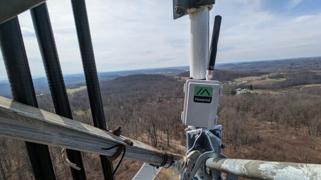

Apollo

About this site
Apollo 🔔 is located 2/3 the way up a 300 ft tower in the area between Avonmore and Apollo. It was installed by @rjdipcord on March 19th, 2025. This node has proven to be a core part of the WPA Mesh backbone that supports Westmoreland and Allegheny Counties. It helps to connect these far stretches of land together, which would have been impossible without the help of MQTT.
Apollo has a very wide area visible and therefore acts as the first-hop priority to nodes in Murrysville, Plum, Delmont, Vandergrift, and some higher altitudes in Latrobe, Greensburg and Kittanning.
Coverage
[Theoretical RF estimate for Apollo]